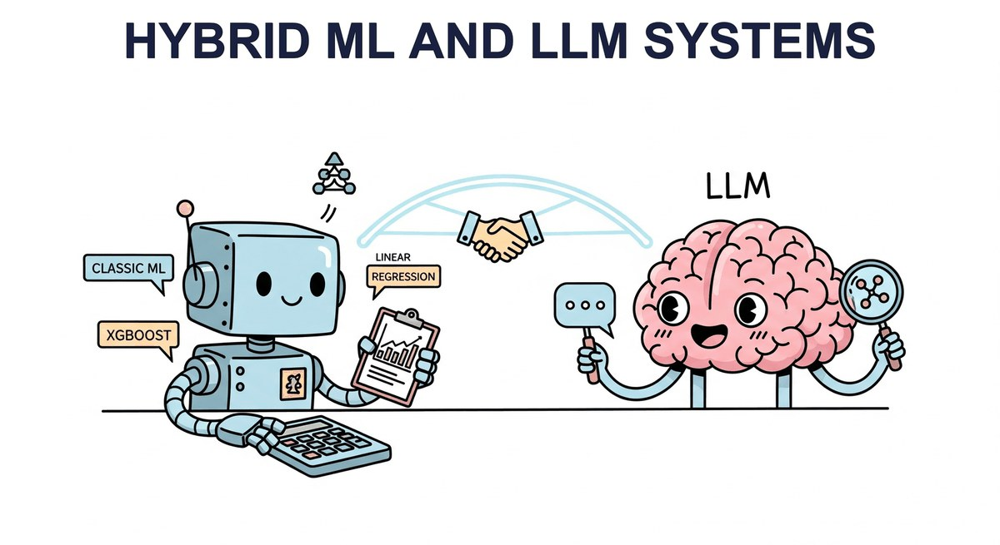

"The art of engineering is not choosing the most powerful tool, but choosing the right tool for each part of the problem."
Deploy, Tool-Savvy AI Agent
An LLM is not always the right tool. This chapter is about combining LLMs with classical ML, when classical ML alone is better, and how to use LLMs as a feature engine inside a traditional pipeline. The decision frameworks here are some of the most reused tables in the book; come back when you need to defend an architecture choice in a design review.
Chapter Overview
In production systems, LLMs rarely work in isolation. The most effective architectures combine large language models with classical machine learning, rules engines, and traditional software in carefully designed pipelines. The challenge is knowing when to use an LLM, when a simpler model will do, and how to orchestrate both into a system that maximizes quality while minimizing cost and latency. These decisions become central to strategic planning and ROI analysis for any AI initiative.
This chapter provides a principled decision framework for choosing between LLMs and classical ML. It covers patterns for using LLMs as feature extractors, building hybrid triage and escalation pipelines, optimizing total cost of ownership, and extracting structured information from unstructured text. These hybrid patterns complement the retrieval techniques covered in Chapter 23 on RAG and the end-to-end application architectures explored later in the book. Each pattern is grounded in real production scenarios with concrete benchmarks, code examples, and cost analyses.
By the end of this chapter, you will be able to evaluate any ML task against a rigorous decision matrix, design hybrid architectures that route work to the right model at the right cost, and build production information extraction pipelines that combine classical NLP with LLM capabilities. You will also learn how to evaluate these systems to ensure they meet quality targets.
When electric guitars arrived in the 1950s, purists predicted the end of acoustic music. Sixty years later, the most resilient sound in popular music is the acoustic-electric hybrid: a guitar that uses pickups when it needs power and wood when it needs warmth. Modern AI products are landing on the same compromise; classical ML handles structured prediction with calibration, LLMs handle the messy unstructured parts, and the seam between them is where most of the engineering lives.
Not every problem needs a large language model, and not every LLM output should be trusted without verification. This chapter shows you when to combine classical ML with LLMs, building hybrid pipelines that are more accurate, faster, and cheaper than either approach alone. This pragmatic mindset carries through to the production chapters in Part VIII.
Two 2024 references frame the hybrid-routing argument concretely: the Mixture-of-Depths paper (Raposo et al., 2024, arXiv:2404.02258) shows even single-model architectures route tokens dynamically by difficulty, and Databricks DBRX (Mar 2024) made the MoE-on-open-weights pattern accessible for in-house hybrid deployments. On the orchestration side, OpenAI's 2024 tool-use cookbook is the canonical reference for cascading small-to-large model pipelines that route by confidence and complexity.
- Apply a structured decision framework to determine when an LLM is appropriate versus classical ML, rule-based systems, or hybrid approaches
- Calculate per-query cost at scale for different model tiers (building on LLM API pricing) and identify breakeven points between API and self-hosted inference
- Use LLM-generated embeddings as features in classical ML pipelines and evaluate their impact on downstream accuracy
- Design hybrid architectures including classical triage with LLM escalation, confidence-based routing, and ensemble voting
- Build cascading model systems that route queries from small to large models based on complexity signals
- Perform total cost of ownership analysis across API costs, infrastructure, engineering time, and maintenance, informing build vs. buy strategy decisions
- Construct a quality-cost Pareto frontier and select optimal operating points for production deployments
- Build information extraction pipelines combining spaCy NER with LLM-based relation extraction and structured output enforcement using BAML and Instructor
- Design dataset engineering pipelines that extract, normalize, filter, and format training data from production logs, building datasets for fine-tuning and alignment
Prerequisites
- Chapter 11: LLM APIs and Tooling (API usage, structured outputs, function calling)
- Chapter 12: Prompt Engineering (few-shot prompting, output formatting)
- Chapter 9: Inference Optimization (quantization, serving infrastructure, latency concepts)
- Familiarity with classical ML concepts: logistic regression, XGBoost, TF-IDF, embeddings
- Python, scikit-learn, and basic NLP library experience (spaCy or similar)
Sections
- 13.1 When to Use LLM vs. Classical ML Not every problem needs an LLM. Entry
- 13.2 LLM as Feature Extractor The best of both worlds. Intermediate
- 13.3 Hybrid Pipeline Patterns The 80/20 insight that drives hybrid architectures. Intermediate
- 13.4 Cost-Performance Optimization at Scale LLM quality is easy; LLM economics is hard. Advanced
- 13.5 Building Training Datasets: Pipelines, Formatting, and Contracts Log-to-dataset pipelines, conversation formatting, preference data, tool-use datasets, and data contracts. Intermediate
- 13.6 Quality Filtering and Data Mixing Strategies Quality filtering techniques and data mixing strategies for instruction tuning and continued pretraining. Intermediate
What's Next?
Next: Chapter 14: Tools of the Trade, LLM API Stack. Chapter 14 closes Part III with the consolidated reference for the API stack: provider SDKs, gateway proxies (LiteLLM, OpenRouter), structured-output libraries (Pydantic, Instructor), eval harnesses, and the prompt-management tools (LangSmith, Helicone) that show you what you actually shipped. Then Part IV inverts the question: instead of calling a model, we shape one, via synthetic data, fine-tuning, LoRA, and RLHF.